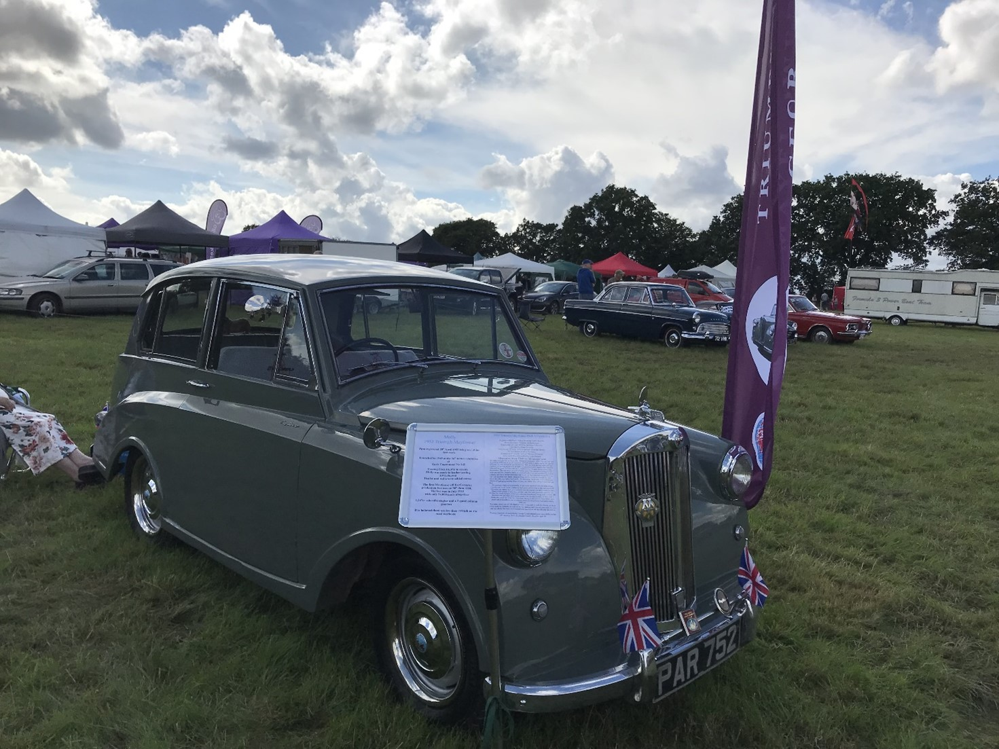

<link href="{{ site.baseurl }}/events/article.css" rel="stylesheet" type="text/css">
<main>
    <article>
        <ol id="breadcrumb">
            <li>
                <a href="{{ site.baseurl }}/">Home</a>
            </li>
            <li>
                <a href="{{ site.baseurl }}/events">Events</a>
            </li>
            <li>
                <a href="{{ site.baseurl }}/events/local">Local</a>
            </li>
            <li>Toots Hill Classic Car and Country Show 2021</li>
        </ol>
        <div id="content">
            <h1>Toots Hill Classic Car and Country Show</h1>
            <h2>7<sup>th</sup> August 2021</h2>
            <h3>Report by Mick Hales</h3>
            
            <p>The Toots Hill Classic Car and Country Show in Ongar, Essex took place on Saturday 7<sup>th</sup> August. Despite the early rain, it was a good show with plenty of visitors once the sun came out in the afternoon.</p>
            <p>On the Country Show side of things, there was ferret racing, a birds of prey display with birds flying free, and a guy called “Dangerous Steve” doing stunts in the main arena. In the main tent, there was local produce, craft products, and cakes for the judges to give prizes for.</p>
            <p>On the car side, I was flying the flag for Mayflowers and my car ‘Molly’ managed Best in Show runner-up, beaten by a Formula 1 kit car look alike! Oh well, maybe next year, but all-in-all a good day out for us and Molly.</p>
            <p>
                Mick Hales<br>
                Member 1266
            </p>
        </div>
    </article>
    <aside>
        <h2>Members’ cars in attendance</h2>
        <ul class="disableListStyles">
            <li>
                <h3>Mick Hales</h3>
                <div>
                    <div class="numberPlateMarker">PAR 752</div>
                </div>
            </li>
        </ul>
    </aside>
</main>
